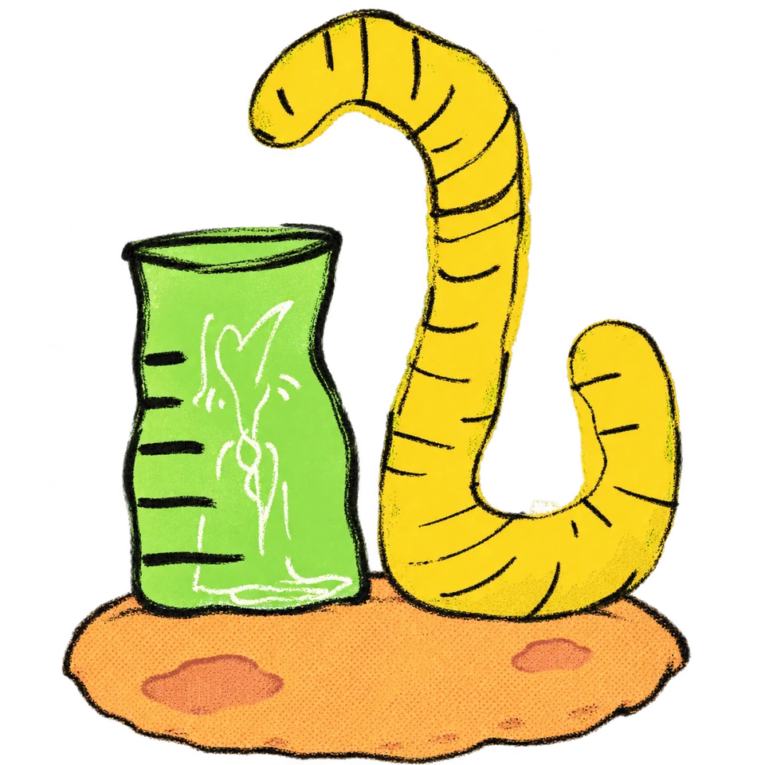

Four years of ecology coursework, a thesis on earthworms, a club built around One Health, and a few things that had nothing to do with any of that.

Led a 5-person team through a research-and-outreach challenge on gender bias in toxicology: consulted a scholar in the field, surveyed 100+ students, made two science videos, and won first place.
An ecotoxicology thesis on how aspartame and acesulfame potassium affect earthworm survival and antioxidant enzyme activity.
A global food-energy-water debate course, a World Rabies Day campaign I helped organize, and two international online exchange programs.
Course 4880 · Rabies Day campaign · Wageningen & Wisconsin exchanges
Basketball, a favorite essay on why same-sex behavior persists in evolution, and two field practicums: biomass energy near Nanjing, and ecology across Shanghai, Dafeng and Sihong.
Basketball · a favorite paper · two field internships